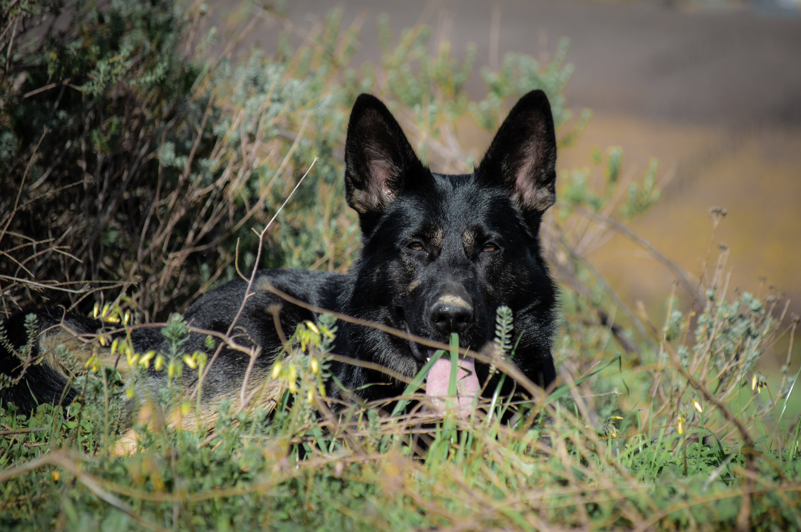
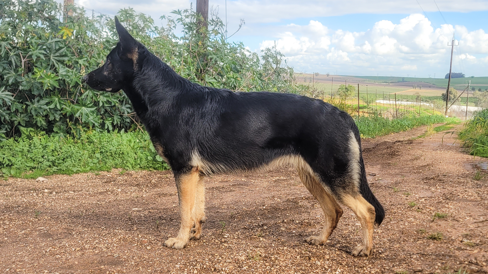
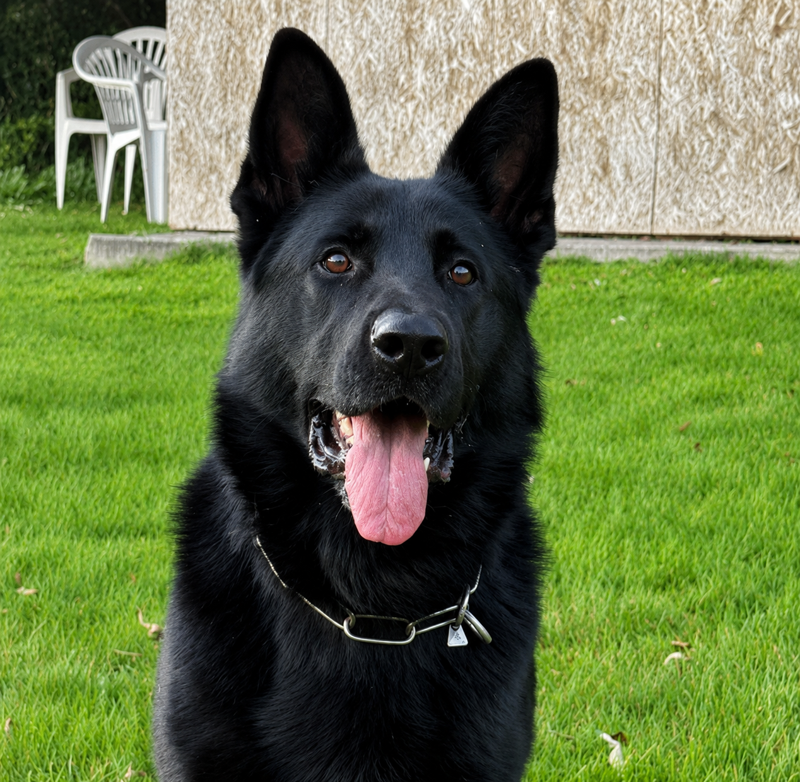
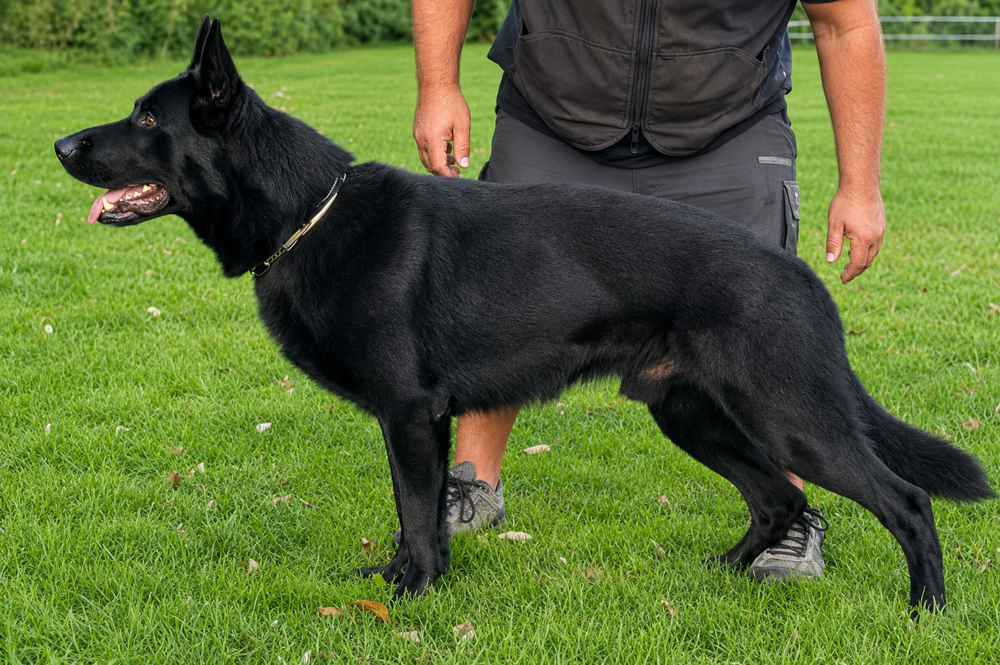
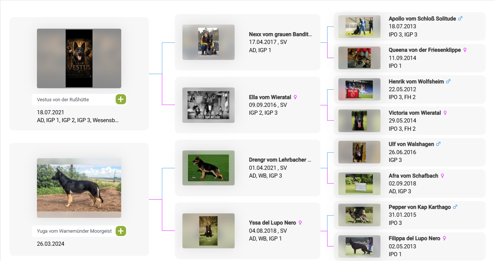
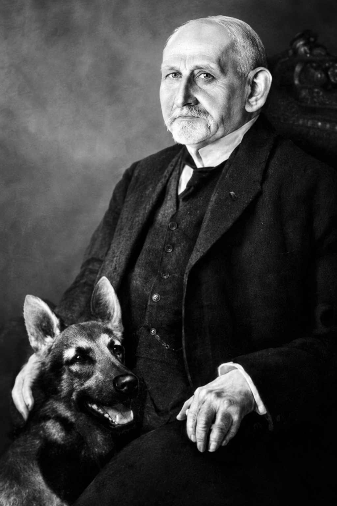

Breeding
A carefully considered combination selected for character, nerve and working ability.


Dam
Yuga represents the ideal balance between capable working dog and devoted companion. Possessing a calm, stable and thoughtful temperament, she demonstrates that true working ability need not come at the expense of composure or clarity of mind. Naturally social, deeply loyal and highly biddable, she carries herself with quiet confidence both in everyday life and on the training field.
When called upon for protection work, Yuga reveals a serious, civil nature supported by clear judgment and unwavering stability under pressure. Combined with her athletic structure, feminine elegance and exceptional temperament, she embodies the qualities that form the cornerstone of the great German Shepherd Dog.
Fully trained in functional obedience and protection.


Sire
Vestus is a male whose value extends well beyond titles or sport performance. From the moment he engages an opponent, he displays the seriousness, dominance and natural defensive instinct that define a true protection dog. His work is purposeful rather than theatrical — characterised by deep, commanding barking, hard full grips, and an unmistakable determination to control the opponent rather than merely compete for equipment.
Combined with excellent nerve, courage, strong working drives and an imposing, robust frame, Vestus possesses the rare depth of character sought by breeders who value authentic working ability over spectacle. He is a dog whose greatest qualities are often appreciated most by experienced eyes — those who understand that true greatness lies not only in performance, but in substance, conviction and heart.
The Combination
With the aim of perfecting character, Vestus and Yuga were selected not simply for pedigree or individual accomplishments, but because their strengths complement one another in meaningful ways. Vestus contributes power, seriousness, natural defensive instinct and commanding presence, while Yuga contributes balance, composure, stability and exceptional biddability. Together they represent a breeding philosophy centred on preserving the qualities that have historically defined the finest German Shepherd bloodlines.
The objective of this combination is not merely to produce capable working dogs, but to preserve character — dogs possessing sound nerves, courage, intelligence, health, natural protective instinct and unwavering devotion to their handler. Equal importance is placed on structural soundness, athletic ability, functional beauty and the hidden qualities that cannot be measured by titles alone: nobility, depth of character, steadfastness and heart.
Litter Pedigree

Selection
With this litter I strive to produce German Shepherd Dogs possessing nobility, substance and heart — the hidden qualities that determine true greatness. Calmness and composure under pressure. True courage distinguished by composure, conviction and self-possession. Sound nerves, steadfastness of character and unwavering resilience. Natural respect for leadership, with willing cooperation and biddability. Genuine protective instinct governed by clear judgment. Loyalty and devotion to family and handler. Intelligence coupled with discernment and sound decision-making. Sound health and functional structure. Athleticism combining strength, speed, endurance, agility, balance and coordination. Powerful, full, calm and crushing grips maintained under defensive pressure. Functional beauty — harmony of form, colour and proportion.

“Utility is the true criterion of beauty.”
— Captain Max von Stephanitz
The German Shepherd Dog was developed by Captain Max von Stephanitz at the close of the nineteenth century with a singular vision: to create the complete working dog. Although its origins lay in the tending and protection of livestock, the breed was never intended to be defined by one occupation alone. Von Stephanitz sought a dog of exceptional versatility — one whose intelligence, sound character, physical capability and willingness to serve would allow it to excel wherever duty demanded.
For von Stephanitz, appearance alone was never enough. True quality was measured by utility, and utility was founded upon character. He believed that the greatest German Shepherds were distinguished not merely by strength or athleticism, but by the qualities that enabled them to work faithfully and confidently under every circumstance.
“The most striking features of the correctly bred German Shepherd are firmness of nerves, attentiveness, unshockability, tractability, watchfulness, reliability and incorruptibility together with courage, fighting tenacity and hardness.”
— Captain Max von Stephanitz
More than a century later, these principles remain as relevant as ever. I believe these qualities define the essence of the German Shepherd Dog. This breeding is undertaken with profound respect for this legacy and with the enduring goal of preserving the true German Shepherd Dog — sound in mind, body and character.